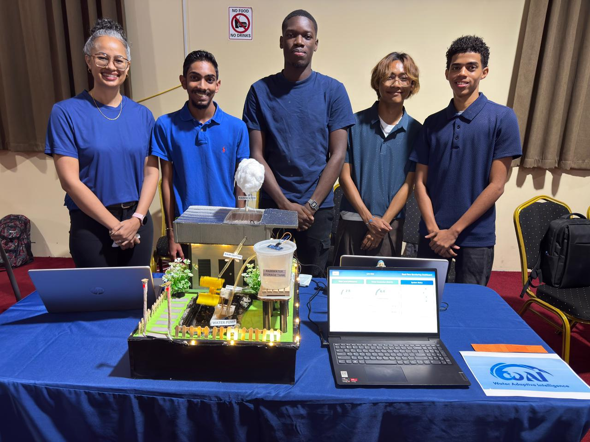

Mijn werk
Uitgelicht project
WAI — Water Adaptive Intelligence — is een slim regenwater-systeem dat regen opvangt, opslaat en hergebruikt. Het project combineert een fysiek werkend model met sensoren en live monitoring.
We hebben dit als groep ontworpen en gebouwd rond een concreet doel: water slimmer beheren met technologie. Van het fysieke model tot het dashboard — elk onderdeel moest samenwerken als één systeem.

2de plaats — UNASAT Science Fair
WAI-systeem
Op de Science Fair van UNASAT heb ik samen met mijn groep het WAI-systeem gebouwd en daarmee de 2de plaats behaald. Dit project laat zien dat ik in staat ben creatief technisch te denken en een werkend systeem te realiseren zelfs in mijn eerste studiejaar.